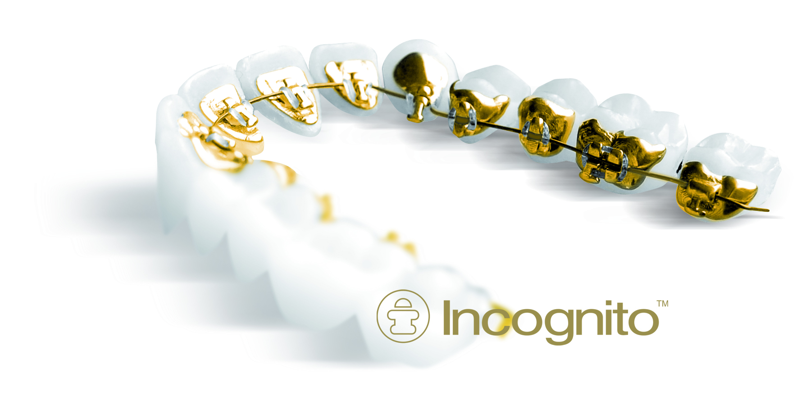

Certyfikowany gabinet techniki lingwalnej
Całe leczenie prowadzone jest tak, aby zamki oraz pozostałe elementy aparatu stałego nie były widoczne.
Czytaj dalejW czasach, w których żyjemy, piękny uśmiech jest bardzo istotny – zarówno w życiu prywatnym, jak i zawodowym.
W naszym Centrum dokładamy wszelkich starań, aby nasi Pacjenci pozostawali aktywni zawodowo przez cały proces leczenia. Leczenie prowadzimy tak, aby indywidualnie dobrane zamki oraz pozostałe elementy aparatu stałego były jak najbardziej dyskretne, a nawet całkowicie niewidoczne.
Łączymy najlepsze osiągnięcia naukowe i medyczne z wieloletnim doświadczeniem, a także indywidualnym i serdecznym podejściem do każdego Pacjenta.
Jako nieliczni w Polsce specjalizujemy się wyłącznie w leczeniu ortodontycznym DZIECI, MŁODZIEŻY oraz DOROSŁYCH. Współczesne metody pozwalają na skuteczne leczenie ortodontyczne każdego pacjenta.
W naszym Centrum mieści się 5 osobnych gabinetów ortodontycznych, co pozwala zaoferować Państwu miłą i specjalistyczną opiekę, a przede wszystkim jak najkrótszy czas oczekiwania na wizytę.
Ortodoncja to nie tylko korekta nieprawidłowo ustawionych zębów – to przede wszystkim:
utrzymanie prawidłowej funkcji narządu żucia
poprawa estetyki twarzy
kontrola prawidłowego napięcia mięśni
eliminacja złych nawyków
opóźnienie efektów starzenia poprzez podparcie tkanek miękkich
uzyskanie długotrwałych efektów w przypadkach wielospecjalistycznych zabiegów stomatologicznych.
Ponadto, prawidłowo przeprowadzone leczenie ortodontyczne zmniejsza ryzyko wystąpienia:
próchnicy
chorób przyzębia
patologicznego starcia zębów
zaburzeń ze strony stawu skroniowo-żuchwowego
Zaopiekujemy się każdym Pacjentem!

W naszym Centrum szczególny nacisk kładziemy na przeprowadzenie leczenia bez konieczności usuwania zębów, co zapewnia harmonijny, estetyczny profil oraz pełniejszy uśmiech, a także opóźnia efekty starzenia. Wychodzimy z założenia, że dobry ortodonta to taki, który dokonuje ekstrakcji tylko w ostateczności.
Alergicy
Specjalnie dla osób z alergią, w naszym Centrum stosujemy zamki ortodontyczne metalowe, niezawierające niklu lub aparaty stałe estetyczne (kryształowe). Przed rozpoczęciem leczenia przeprowadzamy z Pacjentem pełen wywiad na temat jego stanu zdrowia.
Kobiety w ciąży
Leczymy ortodontycznie również kobiety w ciąży, zapewniając bezpieczeństwo oraz stałą kontrolę higieny jamy ustnej. Każdy ortodonta z naszego centrum zna potrzeby kobiet spodziewających się dziecka i wie, w jaki sposób przeprowadzić skuteczne leczenie.
Pacjenci "operacyjni"
Nieprawidłowości zębowe i zębowo-wyrostkowe korygujemy za pomocą standardowych aparatów ortodontycznych. Natomiast wady ortognatyczne (szkieletowe) u młodzieży i dorosłych korygujemy poprzez kompleksowe leczenie ortodontyczno – chirurgiczne. Prowadzimy zespołowe leczenie w ścisłej współpracy z wybitnymi chirurgami szczękowo- twarzowymi. W skład leczenia wchodzi przedoperacyjne przygotowanie ortodontyczne Pacjenta, zabieg chirurgiczny ortognatyczny, a następnie pooperacyjne dalsze leczenie ortodontyczne.